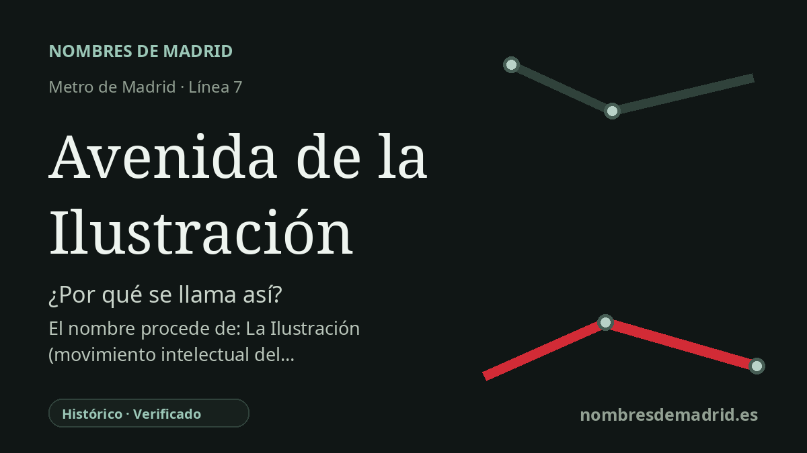

Publicado el · Investigación de Nombres de Madrid · Cómo verificamos cada origen · 8 fuentes consultadas
Respuesta rápida
La estación se llama así por la avenida de la Ilustración, el tramo noroccidental de la M-30 abierto en 1992. El nombre de la avenida alude a la Ilustración, movimiento asociado a la razón, el progreso y la reforma.
La historia del nombre
El nombre de la estación es, ante todo, topográfico: **Avenida de la Ilustración** se llama así por la avenida cercana. La estación de la línea 7 se construyó en el entorno de las calles Islas Cíes y Fermín Caballero y entró en servicio el 29 de marzo de 1999, cuando el Metro llegó al extremo noroccidental de la ciudad en Pitis.
Detrás del nombre de la avenida está **la Ilustración**. En español, el término con mayúscula designa el movimiento filosófico y cultural del siglo XVIII que dio especial valor a la razón, el conocimiento y el progreso. Por eso el nombre resulta singular en el plano del Metro: no recuerda a una persona, santo o barrio concreto, sino a una época intelectual.
La avenida es una obra urbana de finales del siglo XX. Madrid llevaba décadas planteando este cierre noroccidental de la M-30: la ficha municipal de patrimonio vincula el proyecto con ideas ya presentes en el Plan General de 1963, el Proyecto de Red Arterial de 1972 y el Plan General de 1985. Las obras estaban en marcha en 1986 y la nueva vía se abrió al tráfico el 14 de abril de 1992.
El nombre también está unido a un hito muy visible del entorno. La **Puerta de la Ilustración** de Andreu Alfaro, conocida popularmente como Los Arcos, se alza junto a la avenida cerca de La Vaguada; el Ayuntamiento la describe como inseparable del origen y desarrollo de esta gran arteria occidental. La prolongación del Metro tuvo que pasar bajo la M-30 en este punto, de modo que el entorno de la estación fue a la vez pista toponímica y reto técnico.
La etimología mejor respaldada es, por tanto, indirecta pero clara: estación -> avenida -> Ilustración. El contexto de Carlos III que suele asociarse a la palabra Ilustración es históricamente relevante para las reformas madrileñas del siglo XVIII, pero no se ha encontrado una fuente que diga que la estación o la avenida se nombraran específicamente por Carlos III. No consta un nombre anterior de la estación.